ΔΩΡΕΑΝ ΜΑΘΗΜΑΤΑ GO

Από την σημερινή ενότητα ξεκινάμε τα δωρεάν μαθήματα στην GO ή Golang όπως
την ονομάζουν οι περισσότεροι. Η Go είναι από τις πιο δυνατές γλώσσες προγραμματισμού
που έχουν δημιουργηθεί τα τελευταία χρόνια και έχει αρχίσει να αναγνωρίζεται παγκοσμίως
τόσο για την ευκολία της στην δημιουργία εφαρμογών και microservices όσο και για την
ταχύτητα με την οποία εκτελεί τις εντολές. Όλα αυτά θα τα δούμε αναλυτικά μέσα από τις
μελλοντικές ενότητες που θα αναπτύξουμε. Σαν πρώτο βήμα όμως πρέπει να βεβαιωθούμε
ότι έχουμε εγκαταστήσει σωστά την γλώσσα Go και τις παραμέτρους που την ορίζουν
έτσι ώστε να μπορέσουμε να τρέξουμε όλα μας τα προγράμματα χωρίς κανένα πρόβλημα.
Η γλώσσα προγραμματισμού Go είναι διαθέσιμη προς εγκατάσταση για όλα τα
μοντέρνα λειτουργικά συστήματα. Σε αυτή την ενότητα θα δείξουμε πως να
εγκαταστήσουμε την Go σωστά σε Windows 10 λειτουργικό σύστημα.
Το επίσημο link για να κατεβάσουμε την γλώσσα προγραμματισμού Go
είναι το:
https://golang.org/dl/ . Επιλέγουμε την επιλογή Microsoft
Windows και κατεβάζουμε το αρχείο.
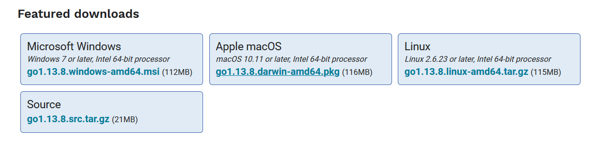
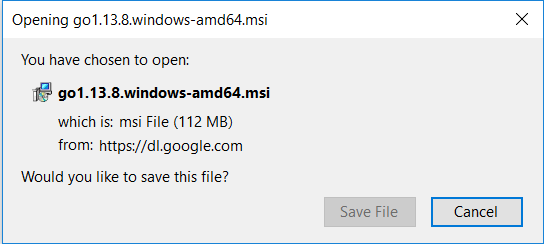
Όταν τελειώσει το κατέβασμα του αρχείου, κάνετε διπλό κλικ επάνω του έτσι
ώστε να αρχίσει η εγκατάσταση του.
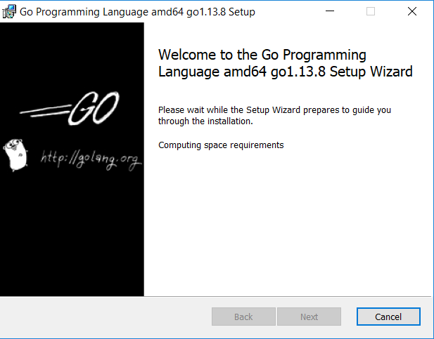
Ακολουθήστε όλα τα default βήματα, και κυρίως μην αλλάξετε το installation
path το οποίο σας προτείνει το πρόγραμμα εγκατάστασης οποίο είναι
το C:\ drive. Όταν ολοκληρωθεί η εγκατάσταση, ανοίξτε ένα cmd terminal
στα Windows και γράψτε την εντολή go version. Αν η εγκατάσταση έχει γίνει
με επιτυχία, τότε λογικά θα πρέπει να δείτε την έκδοση της Go που έχετε εγκαταστήσει
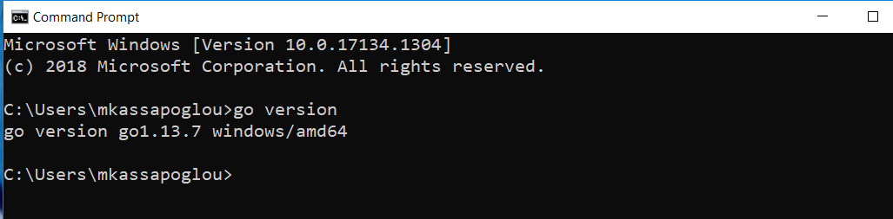
Για να ολοκληρωθεί η διαδικασία εγκατάστασης της Go, σαν δεύτερο
βήμα πρέπει να δημιουργήσουμε τους φακέλους που θα αποτελούν την
δομή των Go projects. Τρέχουμε λοιπόν τις εξής εντολές (κάθε μια ξεχωριστά).
Αυτές δημιουργούν τους απαραίτητους φακέλους κάτω από το default profile
του χρήστη στα Windows.
mkdir %USERPROFILE%\go
mkdir %USERPROFILE%\go\bin
mkdir %USERPROFILE%\go\pkg
mkdir %USERPROFILE%\go\src
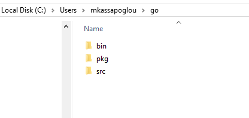
Τώρα πρέπει να δηλώσουμε την GOPATH μεταβλητή στο environment variables των Windows.
- Ανοίγουμε το Control Panel
- Ψάχνουμε για τις environment variables
- Κάνετε κλικ στο Edit environment variables
- Πατάτε στο New
- Για όνομα μεταβλητής γράφετε GOPATH
- Για την τιμή της μεταβλητής δηλώνετε %USERPROFILE%\go
- Πατάτε Save
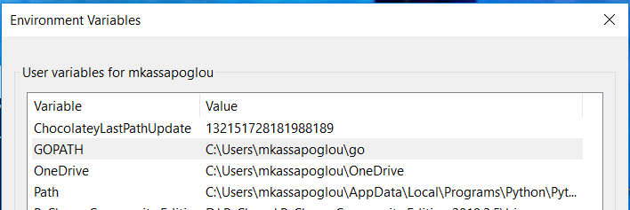
Αν έχετε ανοικτό ακόμα το προηγούμενο cmd terminal κλείστε το και
ανοίξτε ένα καινούργιο. Γράψτε την εντολή echo %GOPATH% για να βεβαιωθείτε
ότι έχετε δηλώσει σωστά το path στα user variables.
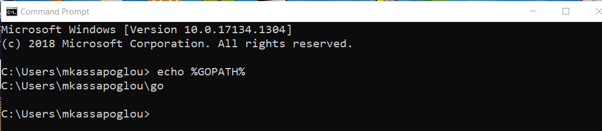
Σαν περιβάλλον ανάπτυξης προγραμμάτων Go θα χρησιμοποιήσουμε το
VS Code. Οπότε για αρχή χρειάζεται να κατεβάσετε και να εγκαταστήσετε
το Visual Studio Code
(https://code.visualstudio.com/) .
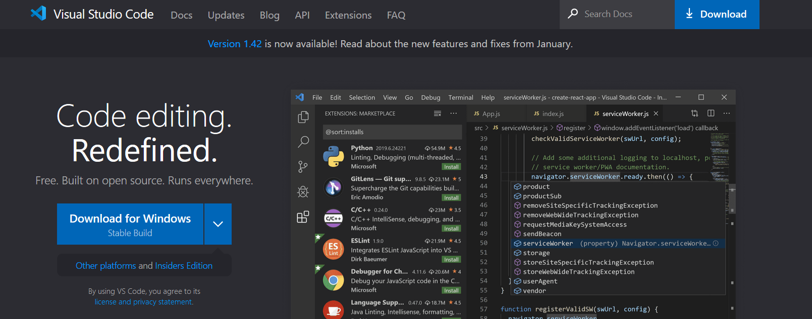
Ακολουθήστε όλες τις default επιλογές για να ολοκληρώσετε την εγκατάσταση.
Όταν τελειώσετε, ξεκινήστε το VS Code. Πατήστε την επιλογή Extensions και
ψάξτε για την Go από την λίστα με τις δυνατότητες που μπορούμε να προσθέσουμε
στο VS Code. Εγκαταστήστε την πρώτη επιλογή που έχει δημιουργηθεί και
υποστηρίζεται από την Microsoft.
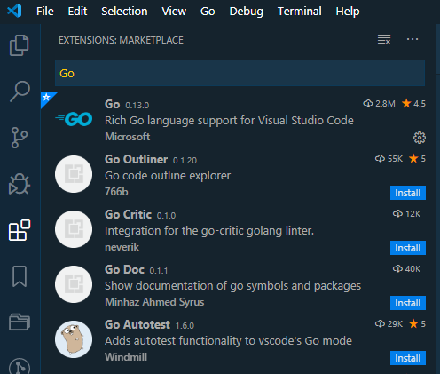
Αφού εγκαταστήσουμε το extension Go στο VS Code πρέπει να
εγκαταστήσουμε και όλα τα tools για μπορέσουμε να κάνουμε build και
exec τα προγράμματα που θα γράφουμε. Για να πετύχουμε αυτό το σκοπό,
Πατάμε επάνω στο View, και επιλέγουμε Command Palette. Στο prompt που
θα ανοίξει γράφουμε Go: Tools και επιλέγουμε Go: Install/Update Tools.
Αν δεν σας βγει ολόκληρη η επιλογή μπορείτε να την ψάξετε όπως Go:Tools
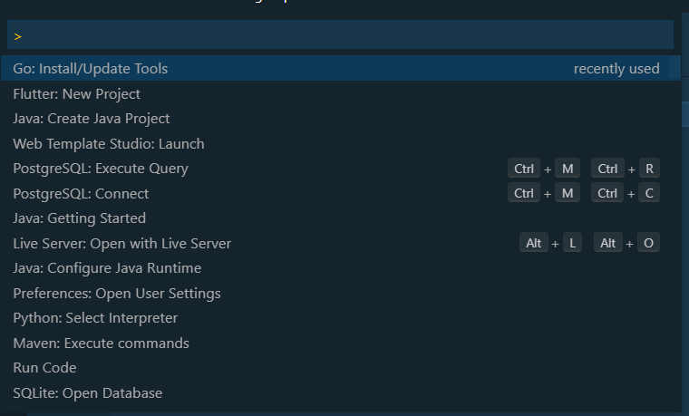
Στην λίστα που θα εμφανιστεί, βεβαιωθείτε ότι έχετε επιλέξει
όλα τα εργαλεία και πατήστε Enter. Αμέσως θα αρχίσει η διαδικασία εγκατάστασης των
εργαλείων της Go. Μπορεί να πάρει μερικά λεπτά μέχρι να ολοκληρωθεί οπότε κάντε λίγο υπομονή.
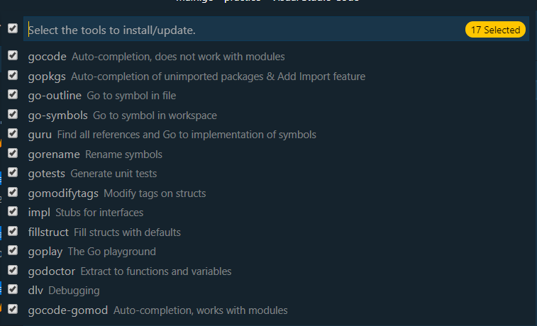
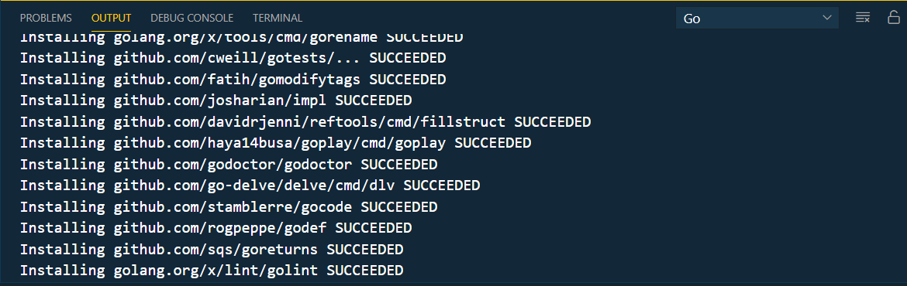
Μετά την εγκατάσταση όλων των εργαλείων είμαστε έτοιμοι
να γράψουμε το πρώτο μας πρόγραμμα και να το εκτελέσουμε.
Στο VS Code πηγαίνουμε στο File → Open Folder και ανοίγουμε τον φάκελο
Go από το profile του χρήστη (για παράδειγμα C:\Users\mkassapoglou\go).
Λογικά, θα πρέπει τώρα να έχετε τους τρεις φακέλους στην οθόνη σας.
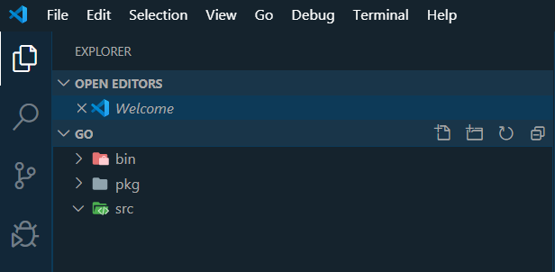
Κάνουμε δεξί κλικ επάνω στον φάκελο src και επιλέγουμε New File
(ή πατάμε μια φορά επάνω του για το επιλέξουμε και μετά πατάμε το εικονίδιο
New File). Σαν όνομα του αρχείου γράφετε main.go και πατάτε Enter (όπου main είναι
το όνομα του αρχείου ενώ go είναι η κατάληξη).
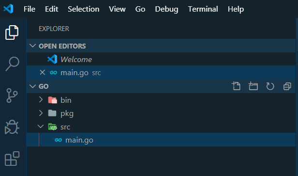
Μέσα στο αρχείο main.go γράφουμε τον εξής κώδικα:
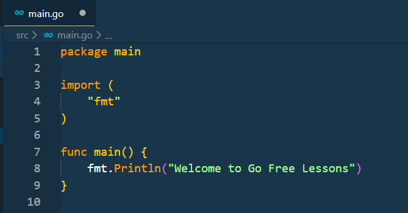
Σώνουμε το αρχείο και πατάμε το κουμπί επάνω δεξιά για να το
εκτελέσουμε. Το αποτέλεσμα θα εμφανιστεί στο κάτω μέρος της οθόνης.
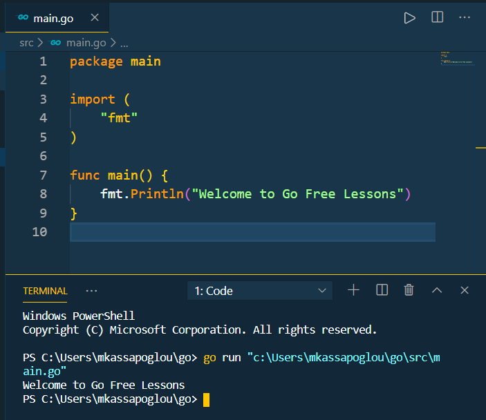
Συγχαρητήρια! Μόλις δημιουργήσατε και εκτελέσατε το πρώτο σας Go πρόγραμμα.
Μην σας απασχολεί το γεγονός ότι ο κώδικας που μόλις γράψατε σας είναι άγνωστος.
Σκοπός της σημερινής διαδικασίας ήταν να βεβαιωθούμε ότι έχουμε ένα λειτουργικό
περιβάλλον ανάπτυξης προγραμμάτων Go. Το τι σημαίνει ο κώδικας και γιατί δημιουργήσαμε
τους φακέλλους θα τα καταλάβετε σε μελλοντικές ενότητες.
Πίσω στις ενότητες GO Programming
Michail Kassapoglou Admin
Γεια σας, είμαι ο Μιχάλης Κασάπογλου και θα σας διδάξω με τον ποιο απλό
τρόπο να προγραμματίζετε σε Python. Ασχολούμαι με την τεχνική εκπαίδευση
σε διάφορες πλατφόρμες, λειτουργικά συστήματα και γλώσσες προγραμματισμού
πάνω από 20 έτη. Κατέχω έναν αρκετά μεγάλο αριθμό πιστοποιήσεων
και σαν Τraining Lead στην Intrasoft έχω την δυνατότητα να αναβαθμίζω συνεχώς
τις γνώσεις μου και να έχω άμεση επαφή με αληθινά projects και εξειδικευμένες μεθόδους
ανάπτυξης εφαρμογών που έχουν υψηλές απαιτήσεις.
Για τυχόν ερωτήσεις σας μπορείτε να επικοινωνήσετε μαζί μου
στο Michail.Kassapoglou@gmail.com
Σας ευχαριστώ που επισκεφτήκατε τα δωρεάν μαθήματα προγραμματισμού GO.